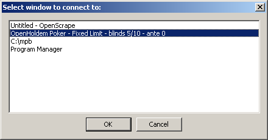
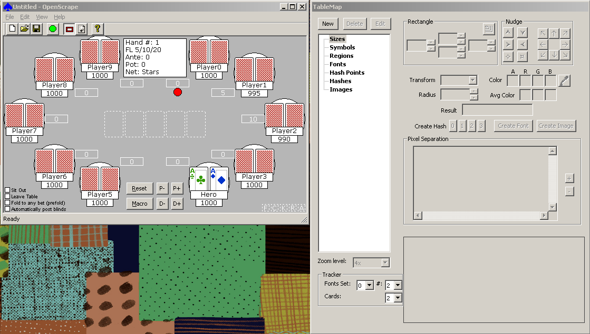

First thing’s first: connect to the poker window
Start a casino, and open up a play money table. For the greatest part of building a table map you could even use “observer” mode if you like; only few things like buttons will require a “real” account . Alternatively, once you learn how to use saved frames and OHReplay, you can also connect OpenScrape to these saved frames while offline from the casino.
For now, let’s keep it simple. Once you have a poker table setup, startup the OpenScrape program from the “c:\mpb” directory that you set up above. Arrange the casino table window and the OpenScrape windows on your screen in such a way that there is no overlap – OpenScrape needs a clear view of the poker table window to do its job.

Connect OpenScrape to the casino table by clicking on the Green Circle Button on the OpenScrape toolbar. A dialog with a list of top-level windows that are currently visible on your screen will appear. Select the one from the list that matches your casino table, and select OK. (Note, in this screenshot, we are connecting to a “ManualMode” window. You will learn more about ManualMode later in this document, but for now, just consider ManualMode to be a simulated, offline poker table).

A static image of the poker table window will be displayed in OpenScrape’s main window. Once OpenScrape has the poker table’s image displayed, you can minimize the poker table if you want, to give yourself more room to work. As the casino table changes state, and if you want to update the image that is displayed in the OpenScrape main window, you can do so at any time by clicking on the refresh button on the toolbar (Black and White arrows), or by choosing View/Refresh from the menu. When a refresh is requested, OpenScrape will bring the connected window to the front, grab the image, and then place it to the back again. Additionally, if you have OpenScrape connected to an OHReplay window, it automatically moves OHReplay to the next saved frame prior to grabbing the image.

Once we have the poker table image in OpenScrape, it is time to start building our Table Map, and providing the parameters that the OpenHoldem game state engine will use to “read” the poker table.